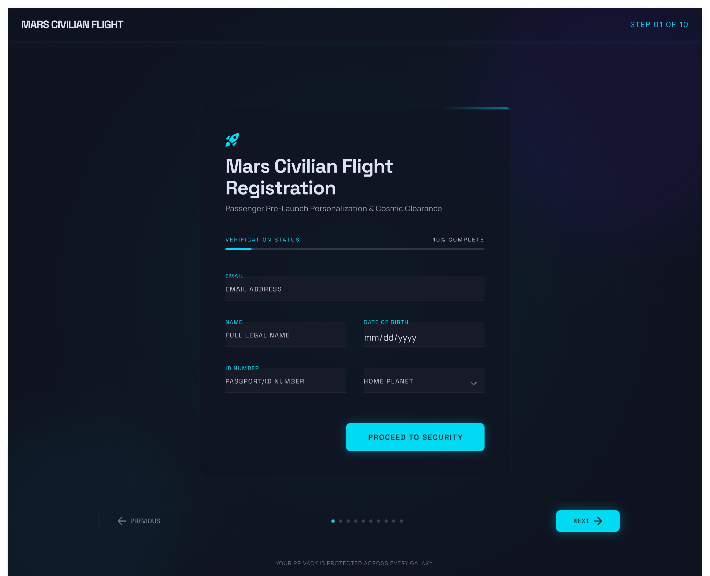
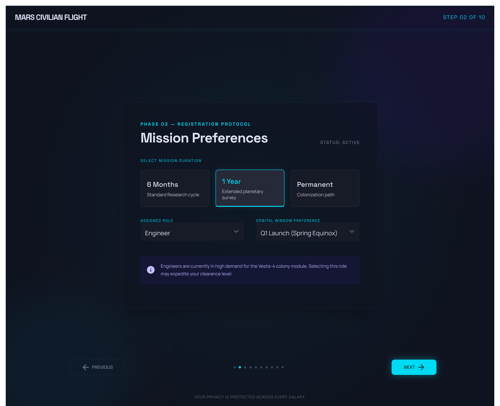
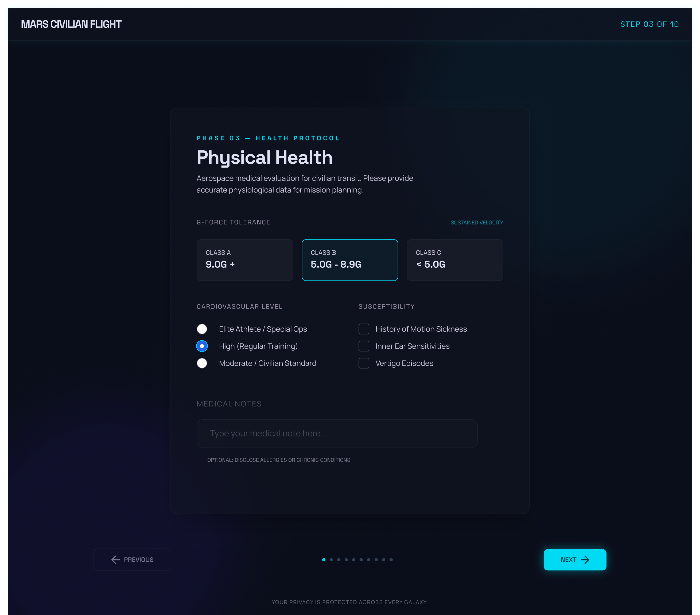
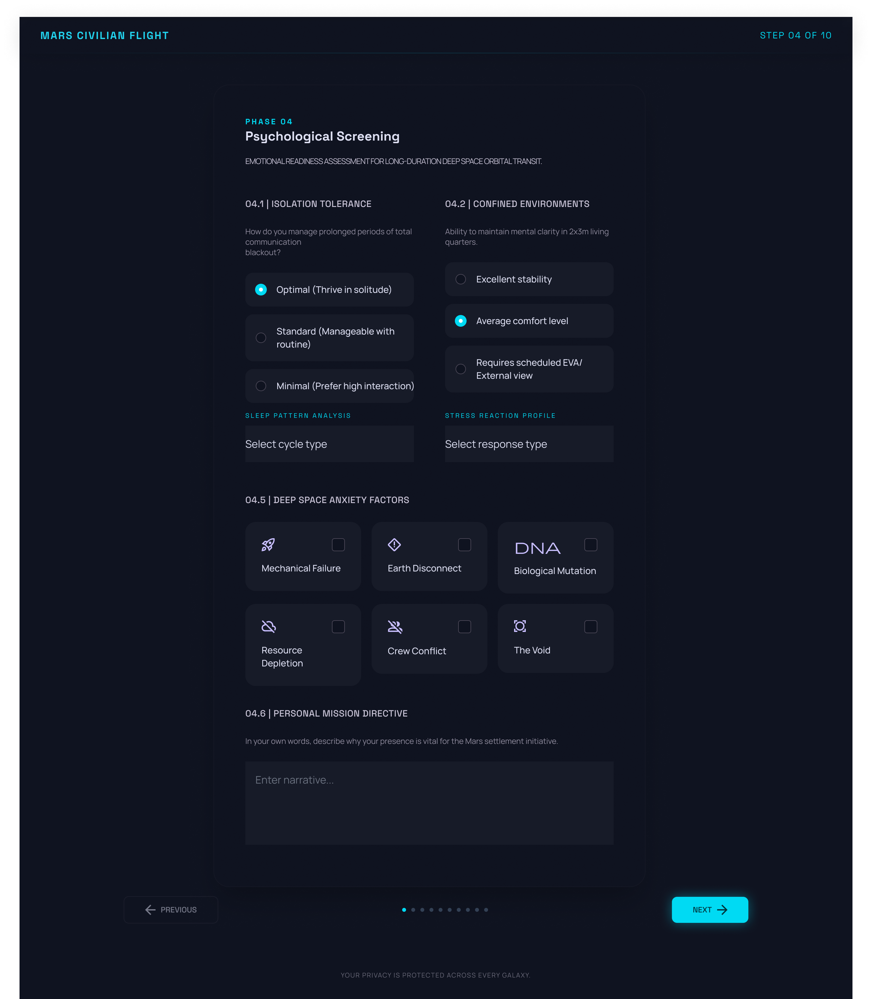
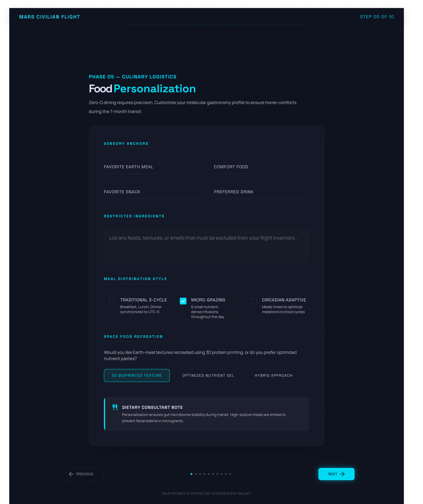
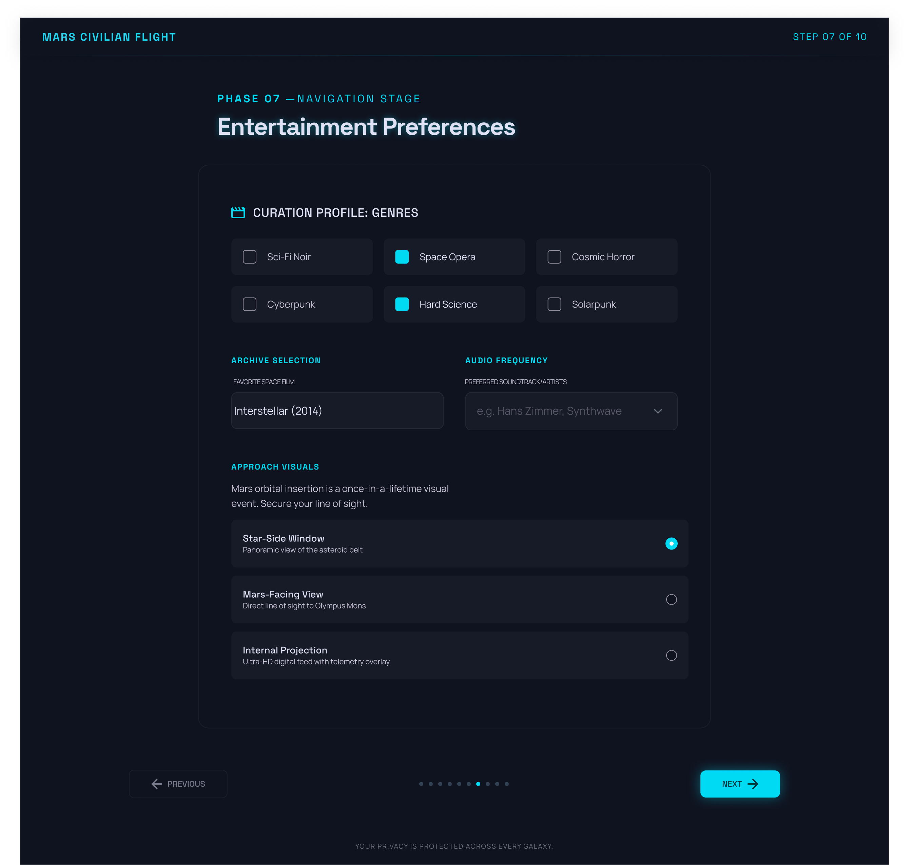
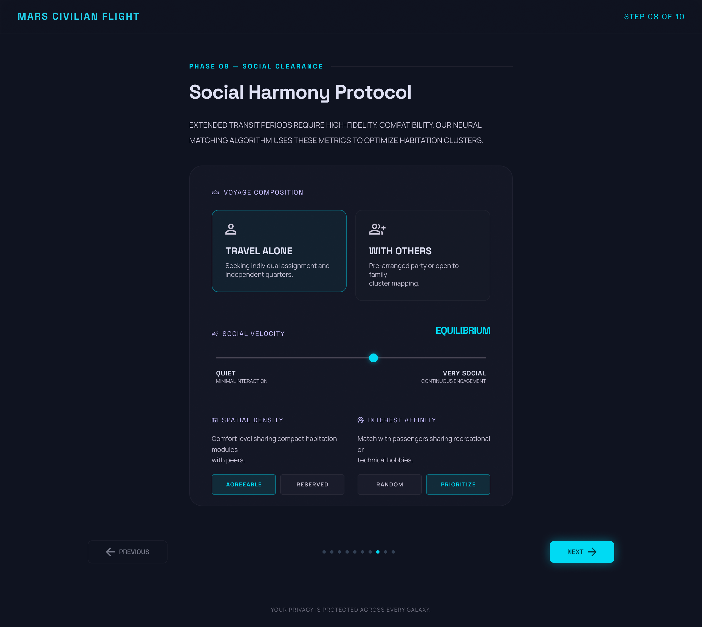
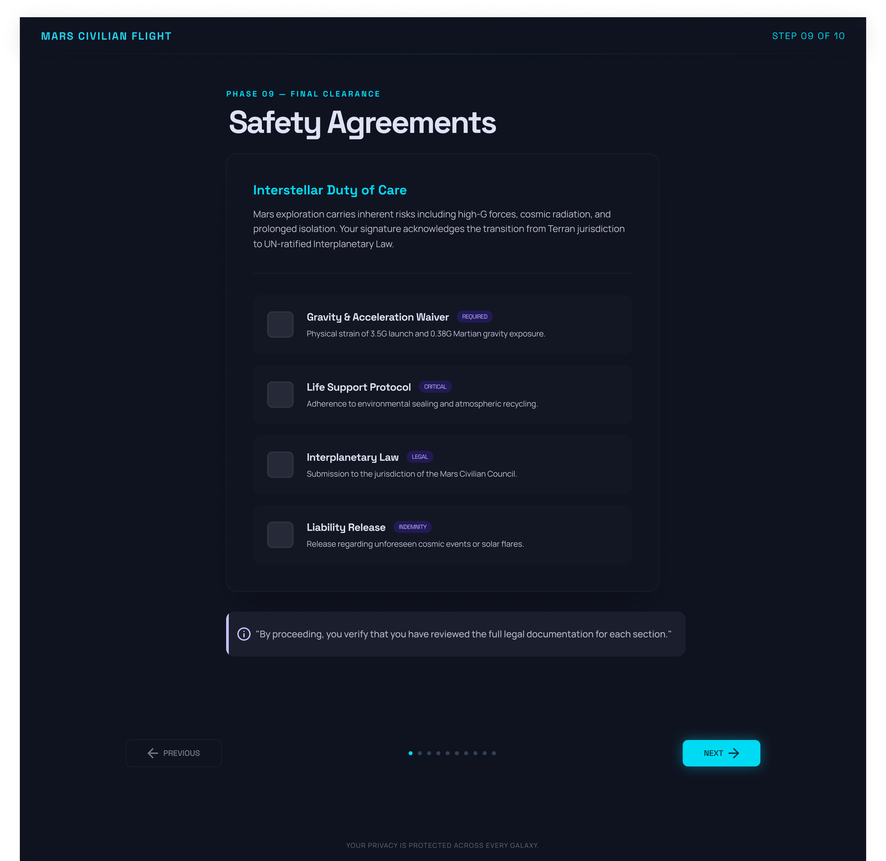
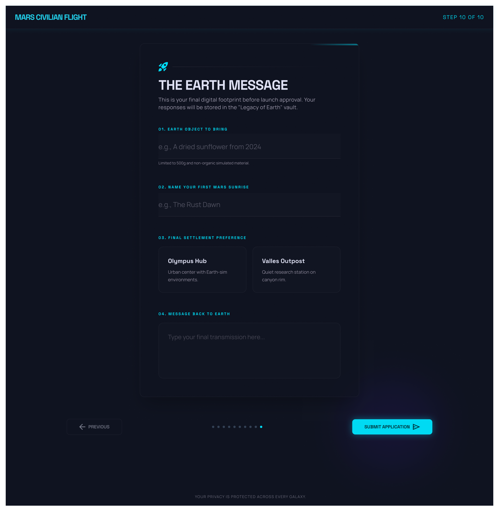

Design Overview
The Mars Registration Form was designed as a modern multi-step onboarding experience that makes a complex registration process feel simple. Instead of showing users a long traditional form, the experience breaks the journey into smaller steps that are easier to understand and complete.
The design focuses on clarity, visual comfort, and smooth progression. Each screen presents only one decision at a time, helping users stay focused without feeling overwhelmed.
Problem Statement
Traditional registration forms often show too much information at once, making the process feel long and frustrating.
- feels simple
- keeps users engaged
- shows clear progress
- matches the product's visual identity
Solution
The solution was to redesign the registration process into a guided multi-step form instead of a long single-page form.
- breaks information into smaller steps
- shows progress clearly
- reduces visual clutter
- gives instant validation feedback
- keeps the interface consistent
Design Implementation










Thankyou for taking the time to explore this case study.